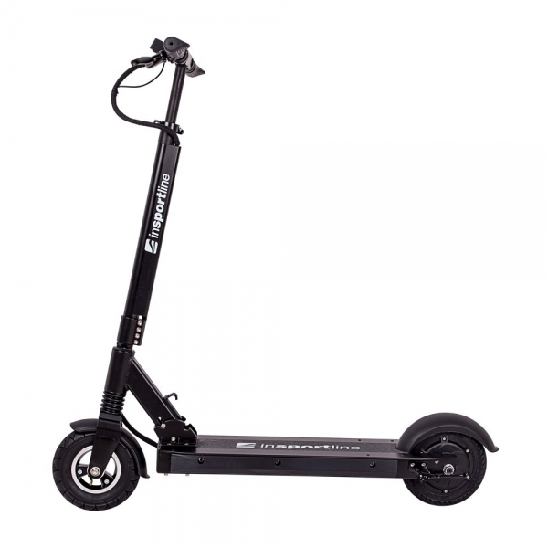

Welcome to Elektrinis paspirtukas
ELEKTRINIAI PASPIRTUKAI - Electrocity.lt
2020.10.27 09:47
+370 678 08 888 info@electrocity.lt Mano paskyra Registruotis Prisijungti Pageidavimai (0) Prekių krepšelis Atsiskaitymas 0 prekė(s) - € 0.00 Kategorijos ELEKTRINIAI PASPIRTUKAI ELEKTRINIAI DVIRAČIAI ELEKTRINIAI MOTOROLERIAI ELEKTRINĖS RIEDLENTĖS KITA AKSESUARAI DALYS ŠALMAI LIEMENĖS SPYNOS / UŽRAKTAI PASPIRTUKŲ STOVAI DVIRAČIŲ STOVAI STOGINĖS GPS SEKIMO ĮRANGA Žiūrėti visus KITA ELEKTRINIAI PASPIRTUKAI Filtras
ELEKTRINIAI PASPIRTUKAI
Elektriniai paspirtukai - populiarėjanti transporto priemonė, kuria važiuoti ne tik smagu, bet ir praktiška.
Elektrinis paspirtukas - ekologiškas, ekonomiškas, efektyvus. TaI ne tik gali būti alternatyva Jūsų automobiliui, bet ir tausojanti gamtą, transporto priemonė. Taupykite savo brangų laiką ir pinigus, daugiau jokių spūsčių, automobilio eksplotacijos ir parkingo išlaidų. Kompaktiškas, ekonomiškas “mažylis” mieste taps nepakeičiamu draugu.
Mūsų parduodami elektriniai paspirtukai kokybiški, stilingi ir tik patikimų gamintojų. E-paspirtuką reikėtų rinktis pagal poreikį, įvertini nuvažiuojamą atstumą, svorį, baterijos talpą, galią, maksimalų greitį.
Elektriniai paspirtukai internetu - ElectroCity.lt
Mums rūpi Jūsų saugumas!
Pirkdami bet kurį elektrinį paspirtuką gausite DOVANŲ - "Powerslide" šalmą ir "Cross" atšvaitinį diržą .
Elektrinis paspirtukas SXT Light Plus V
Nuvažiuojamas atstumas: 40 km
Maksimalus greitis: 37 km/val
Greičio ribojimo funkcija: Yra
Svoris: 11,2 kg
Spalva: Juoda, ruda, mėlyna
€ 999.00 € 1,049.00
Į krepšelįElektrinis paspirtukas SXT Light GT
Nuvažiuojamas atstumas: 50 km
Maksimalus greitis: 40 km/val
Greičio ribojimo funkcija: Yra
Svoris: 11.9 kg
Spalva: Juoda, ruda
€ 1,200.00
Į krepšelįElektrinis paspirtukas INOKIM OX Hero
Nuvažiuojamas atstumas: 60 km
Maksimalus greitis: 25 km/val
Greičio ribojimo funkcija: Yra
Svoris: 26 kg
Spalva: Juoda
€ 1,399.00
Į krepšelįElektrinis paspirtukas SXT Monster
Nuvažiuojamas atstumas: 30 km
Maksimalus greitis: 60 km/val
Greičio ribojimo funkcija: Yra
Svoris: 47 kg
Spalva: Juoda
€ 1,100.00
Į krepšelįElektrinis paspirtukas SXT Buddy V2
Nuvažiuojamas atstumas: 40 km
Maksimalus greitis: 35 km/val
Greičio ribojimo funkcija: Yra
Svoris: 14 kg
Spalva: Juoda, balta
€ 1,099.00
Į krepšelįElektrinis paspirtukas SXT 1600 XL
Nuvažiuojamas atstumas: 30 km
Maksimalus greitis: 55 km/val
Greičio ribojimo funkcija: Nėra
Svoris: 32,6 kg
Spalva: Juoda, balta
€ 799.00
Į krepšelįElektrinis paspirtukas INOKIM OX Super
Nuvažiuojamas atstumas: 110 km
Maksimalus greitis: 25 km/val
Greičio ribojimo funkcija: Yra
Svoris: 28 kg
Spalva: Juoda
€ 1,799.00
Į krepšelįElektrinis paspirtukas SXT 500 EEC
Nuvažiuojamas atstumas: 25 km
Maksimalus greitis: 25 km/val
Greičio ribojimo funkcija: Nėra
Svoris: 28 kg
Spalva: Juoda, balta
€ 679.00
Į krepšelįElektrinis paspirtukas SXT 1000 XL EEC
Nuvažiuojamas atstumas: 30 km
Maksimalus greitis: 40 km/val
Greičio ribojimo funkcija: Nėra
Svoris: 29 kg
Spalva: Juoda, balta
€ 849.00
Į krepšelįElektrinis paspirtukas SXT MAX
Nuvažiuojamas atstumas: 40 km
Maksimalus greitis: 20 km/val
Greičio ribojimo funkcija: Yra
Svoris: 23 kg
Spalva: Juoda
€ 1,100.00
Į krepšelįElektrinis paspirtukas INOKIM OXO
Nuvažiuojamas atstumas: 110 km
Maksimalus greitis: 25 km/val
Greičio ribojimo funkcija: Yra
Svoris: 33 kg
Spalva: Juoda
€ 2,299.00
Į krepšelįElektrinis paspirtukas SXT Light Plus
Nuvažiuojamas atstumas: 35 km
Maksimalus greitis: 30 km/val
Greičio ribojimo funkcija: Yra
Svoris: 11 kg
Spalva: Juoda, ruda, mėlyna
Prekę turėsime 20.10.07
€ 879.00 € 949.00
Į krepšelįElektrinis paspirtukas INOKIM LIGHT HERO
Nuvažiuojamas atstumas: 23 km
Maksimalus greitis: 25 km/val
Greičio ribojimo funkcija: Yra
Svoris: 12,5 kg
Spalva: Balta, mėlyna, oranžinė, žalia
Išparduota
€ 829.00
Į krepšelįElektrinis paspirtukas INOKIM Quick 3 Super
Nuvažiuojamas atstumas: 45 km
Maksimalus greitis: 25 km/val
Greičio ribojimo funkcija: Yra
Svoris: 16,5 kg
Spalva: Juoda, balta, mėlyna, oranžinė
€ 1,099.00
Į krepšelįElektrinis paspirtukas INOKIM LIGHT 2
Nuvažiuojamas atstumas: 40 km
Maksimalus greitis: 25 km/val
Greičio ribojimo funkcija: Yra
Svoris: 13,7 kg
Spalva: Juoda, balta, žalia, mėlyna, oranžinė
Išparduota
€ 999.00
Į krepšelįElektrinis paspirtukas INOKIM OX Eco
Nuvažiuojamas atstumas: 58 km
Maksimalus greitis: 25 km/val
Greičio ribojimo funkcija: Yra
Svoris: 25 kg
Spalva: Juoda
€ 1,199.00
Į krepšelįElektrinis paspirtukas SXT Light Eco
Nuvažiuojamas atstumas: 30 km
Maksimalus greitis: 25 km/val
Greičio ribojimo funkcija: Yra
Svoris: 10,7 kg
Spalva: Juoda, ruda, balta
Išparduota
€ 699.00 € 799.00
Į krepšelįElektrinis paspirtukas SXT Ultimate Lite
Nuvažiuojamas atstumas: 28 km
Maksimalus greitis: 50 km/val
Greičio ribojimo funkcija: Yra
Svoris: 28 kg
Spalva: Juoda
€ 1,499.00
Į krepšelįElektrinis paspirtukas SXT Ultimate PRO
Nuvažiuojamas atstumas: 50 km
Maksimalus greitis: 65 km/val
Greičio ribojimo funkcija: Yra
Svoris: 31,3 kg
Spalva: Juoda
€ 1,999.00 € 2,200.00
Į krepšelįElektrinis paspirtukas SXT Ultimate PRO Plius
Nuvažiuojamas atstumas: 50 km
Maksimalus greitis: 80 km/val
Greičio ribojimo funkcija: Yra
Svoris: 41,64 kg
Spalva: Juoda
€ 2,398.00 € 2,600.00
Į krepšelįElektrinis paspirtukas EGRET Eight V2
Nuvažiuojamas atstumas: 30 km
Maksimalus greitis: 30 km/val
Greičio ribojimo funkcija: Yra
Svoris: 14 kg
Spalva: Juoda, pilka
€ 1,199.00
Į krepšelįElektrinis paspirtukas EGRET TEN V3
Nuvažiuojamas atstumas: 40 km
Maksimalus greitis: 30 km/val
Greičio ribojimo funkcija: Yra
Svoris: 17 kg
Spalva: Juoda, pilka
€ 1,599.00
Į krepšelįElektrinis paspirtukas SXT Neo
Nuvažiuojamas atstumas: 25 km
Maksimalus greitis: 30 km/val
Greičio ribojimo funkcija: Yra
Svoris: 9,7 kg
Spalva: Juoda, balta
Išparduota
€ 499.00
Į krepšelįElektrinis paspirtukas THE URBAN #BRLN V2
Nuvažiuojamas atstumas: 20 km
Maksimalus greitis: 25 km/val
Greičio ribojimo funkcija: Yra
Svoris: 12 kg
Spalva: Juoda, pilka
€ 899.00
Į krepšelįElektrinis paspirtukas THE URBAN #HMBRG
Nuvažiuojamas atstumas: 30 km
Maksimalus greitis: 30 km/val
Greičio ribojimo funkcija: Yra
Svoris: 17 kg
Spalva: Juoda, pilka
€ 1,099.00
Į krepšelįElektrinis paspirtukas INOKIM Mini Force
Nuvažiuojamas atstumas: 20 km
Maksimalus greitis: 20 km/val
Greičio ribojimo funkcija: Nėra
Svoris: 8,7 kg
Spalva: Juoda
€ 599.00
Į krepšelįElektrinis paspirtukas INOKIM Mini 2
Nuvažiuojamas atstumas: 20 km
Maksimalus greitis: 22 km/val
Greičio ribojimo funkcija: Nėra
Svoris: 8,7 kg
Spalva: Baltas
€ 599.00
Į krepšelįElektrinis paspirtukas Immotor Go
Nuvažiuojamas atstumas: 25 km
Maksimalus greitis: 25 km/val
Greičio ribojimo funkcija: Yra
Svoris: 15 kg
Spalva: Juoda
€ 1,560.00
Į krepšelįElektrinis paspirtukas Coco XL
Nuvažiuojamas atstumas: 35 km
Maksimalus greitis: 35 km/val
Greičio ribojimo funkcija: Yra
Svoris: 60 kg
Spalva: Juoda
€ 1,999.00
Į krepšelį Rodoma nuo 1 iki 29 iš 29 (1 puslapių) ×Prekė įtraukta į krepšelį
Tęsti prekių paiešką PirktiInformacija
Apie mus Pristatymas Apmokėjimas Garantijos pratęsimas Garantijos ir grąžinimas Taisyklės Privatumo politika D.U.K KontaktaiPriedai
Prekių ženklai Dovanų kuponai Partnerystės programa Specialūs pasiūlymaiMano paskyra
Mano paskyra Užsakymų istorija Pageidavimų sąrašas Naujienų prenumerataAptarnavimas
+370 678 08 888 info@electrocity.lt I-V 9.00 - 18.00Electrocity.lt © 2020
